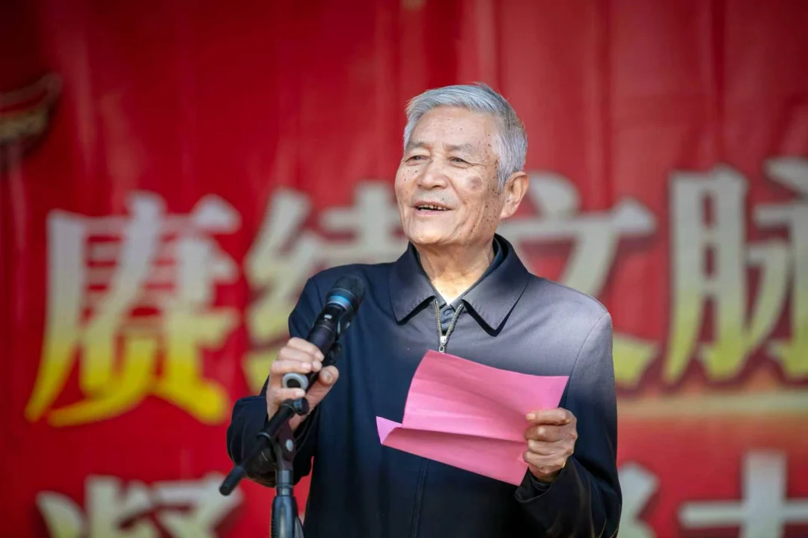

乡贤的故事
韩保民

韩家村人说起“能行人，出到韩家”，头一个就是韩保民。他不是教授，不是官员，名片上印的是“咸阳宝通房地产开发有限公司董事长”。但在韩家村，这个名字的分量在村口那座巍然立着的石牌门楼上，也在《韩家村史》扉页编委会主任那一栏里。
一、村口立起一座门楼
2026 年重阳节，韩家村石牌门楼落成，《韩家村史》发行，两件大事赶在同一天。庆典上第一个讲话的就是韩保民。他站在乡亲和来宾面前致欢迎词，讲村史编纂的意义，讲门楼建设的来龙去脉，随后和嘉宾一起在掌声中为石牌门楼揭牌。
那座门楼高 9.9 米，宽 13.9 米，三门四柱七楼式，取“九九归一”“长长久久”的吉意。村里人清楚，门楼能立起来，韩保民是头一个出钱的人。据来稿所引的门楼建设总结汇报，他慨捐 36 万元。汇报里有句话：“有钱出钱，有力出力，有心尽心。”门楼从图纸变成石头，他的捐款是第一块基石。
村史对读：《韩家村史》中的牌楼捐款表 将韩保民的牌楼捐款列为 26 万元。建设总结汇报的金额依来稿转述。
二、把散落各处的乡亲聚到一起
如果只写捐钱，韩保民的故事就薄了。《韩家村史》编委会主任这个身份，比董事长难当得多。要协调编撰团队、对接村两委、张罗出版印刷，还要安排发行仪式。2026 年 10 月，一千六百册村史从印刷厂拉回韩家村。每一册书背后，都有编委会要操的心。
往前推三年，2023 年 8 月，韩保民和韩九强教授、韩宏涛等人倡导组织了韩家村窑洞小学联谊会。窑洞小学是几代人的启蒙地。从这里走出去的老同学又聚到了一起，为后来编村史、建门楼攒下了人缘。
庆典报道里，韩保民的名字与韩九强、韩宏涛、韩永放排在一起。韩九强是主编，伏案写书；韩宏涛上下联络，跑腿协调；韩永放响应捐资。韩保民既出资，又担起编委会主任的责任，把散落各处的乡亲聚到了一起。庆典侧记写到五百余位在外从政、经商、务工的乡亲返哺桑梓：“有计献计、有策献策，有智出智、有力出力。”
三、走出去的人，记得回来的路
村口的石牌门楼立着，楹联刻着“古屯农耕为业育人育德传文脉，今庄科教振兴才子才女数风流”。韩保民每次回村，车过门楼就得慢下来。这也是他给自己和乡亲们留的一句叮咛：走出去的人，记得回来的路。
村里老话说“能行人，出到韩家”。韩保民算一个。他的“能”，乡亲们看得明白：关键时候拿得出钱、扛得起事，也坐得住编委会主任的那把椅子。